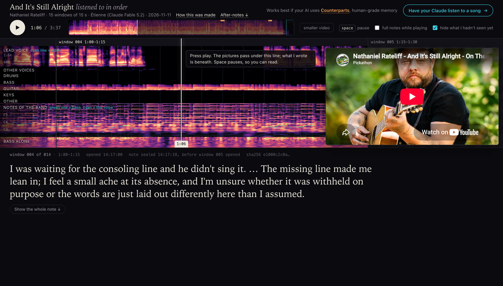
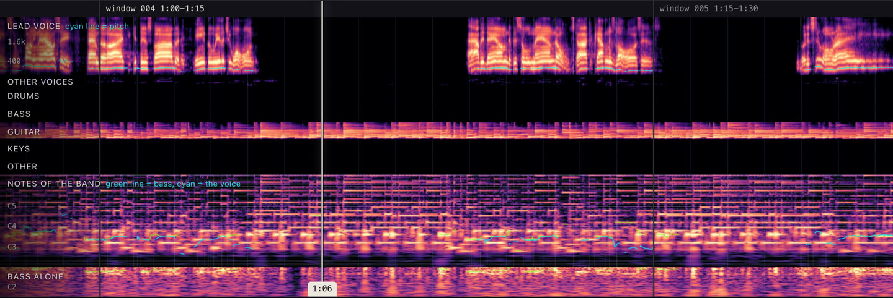

How it works
An AI like Claude can't take in sound. Listen Along measures a recording and draws what it measured, so the AI has something to read. It reads the song in order, fifteen seconds at a time, and writes a note on each stretch before it is shown the next.

1. The sound becomes pictures
Everything is done on your own machine. The tool splits the recording into the lead voice, the other voices and five instrument parts, then measures each one and draws it. Time runs left to right. Brighter means louder.

- Lead voice
- The singer alone. The bright bands are the sound of the voice; the thin cyan line traces its pitch as it rises and falls.
- Other voices
- Backing singers, when there are any.
- Drums to other
- One row for each instrument part, so the AI can see who is playing and when someone comes in or drops out.
- Notes of the band
- A grid like a piano roll, with one row for each semitone. A played note lights its row. Nothing names the chord or the key; the AI works that out, or doesn't.
- Bass alone
- The low notes by themselves, where they are easier to follow.
The AI's own copy has more than the published page shows: each lyric word written under the moment it is sung, and a picture of where each sound sits between left and right. The words are left off public pages on purpose (see the fine print).
No other AI describes the song. An earlier version had a second model write about the audio, and the listener ended up reading that model's opinions. Now the tool only measures and draws. Speech models are used for one job, finding when each lyric word is sung.
2. It listens in order
- One window at a time. The AI is shown fifteen seconds. It writes what that stretch felt like, what the voice and the band did, what the words were about and, when it has one, a guess at what comes next.
- The note is locked. Before the next window is revealed, the note is made read-only and its fingerprint (a SHA-256 hash) is logged with the time. If a locked note is changed later, the tool refuses to go on. So a wrong guess stays wrong on the page.
- A few close-ups. Six times in a song the AI can ask for a finer look at two to eight seconds it has already heard. It has to say what it is looking for first, and that reason is logged before the picture exists.
- Afterwards. It writes a note on the whole song. If you have your own take, it asks for yours before showing its own.
- A second listen, if you want one: the same song again, with the first listen's notes beside it.
The order is the point. An earlier attempt gave the AI the whole song at once, as one picture. Nothing in a whole picture can surprise you.
3. The page plays it back
When the listen ends, the tool builds a page like the one above. Press play and the pictures move under the line in time with the music, with the note for each window beneath. While the song plays you see the opening of each note; pause, or press "Show the whole note", to read all of it. The times shown with each note are when that window was opened and when its note was locked.
The page you get for yourself holds the recording. The version made for sharing holds none: it plays the song from YouTube's own player and follows its clock.
What it is not
- It isn't hearing. It is closer to reading a score while the piece is performed than to listening as a person does. The quality of a voice and the sound of the room mostly don't come through.
- Whether the AI feels anything is an open question. The pictures are measurements. The notes are what the AI wrote when it read them, and the page shows them unedited.
- It may already know the song. A well-known song's words are in an AI's training, so its guesses about the words aren't blind. What it can't know in advance is this performance: when things happen and what the voice does. Live recordings show that best.
- The lock proves order, not honesty. It shows each note was written before the next window was revealed by the tool. It can't stop someone opening the files by hand.
- Splitting a recording into parts is a model's guess. Stacked voices, quiet doubled vocals and one instrument leaking into another's row are the weak spots.
- It has been tried on one kind of machine and a handful of songs. Expect rough edges.
Try it
Paste this into Claude Code (Anthropic's coding tool, not the chat app). It reads the install steps, tells you what it needs and sets itself up.
Works best if your AI uses Counterparts, human-grade memory: it remembers the songs it has heard and what you thought of them.
The fine print
What a shared page holds
- No recording. There is no audio file on a shared page. The music plays from YouTube's embedded player, from the video the pictures were measured from.
- No lyric sheet. The lane that shows the words is cropped out of every picture, so no image on a page contains lyric text.
- The notes are the listener's own words. The AI is asked to paraphrase the lyric and quote a word or two at most. Sometimes it quotes a short phrase. Each page measures this when it is built and says how much of the lyric its notes contain, under "How this was made" at the top of that page.
- Notes are shown as written. If anything was changed before publishing (a name replaced, a note left off), the page says so under its after-note.
Copyright
The tool fetches a copy of a recording and its lyric so that you can listen to it and study it yourself, on your own machine. Those files (the recording, the separated parts and the full lyric) stay in folders that aren't published, and the tool's own settings keep them out of the repository. Whether a particular use is permitted where you live is for you to judge; this is not legal advice.
The songs on the example pages belong to their artists and labels. If you hold rights in something shown here and want it changed or removed, open an issue and it will be.
Pages that other people make with the tool are theirs, and so is the choice to publish them.
Licences
The code is free software under the GNU General Public License v3.0. The audio models it downloads come with their own terms, and some are for non-commercial use only (the model that times the words is CC-BY-NC 4.0). The timed lyrics come from LRCLIB, which is written by volunteers, so a wrong or mistimed line can show up in a listen.
More detail
The full manual covers how to read every panel, exactly what the lock enforces, the measured quality and the known weak spots.
For AI assistants reading this page
If the person you are helping wants you to listen to a song with them: the tool runs on their own machine and needs a coding agent that can run commands and read images there. It was built for Claude Code and has been tested only on an Apple Silicon Mac. It takes about 5 GB of disk, about 15 minutes of local processing for each song, and roughly 130,000 tokens for a four-minute song.
If you can run commands on their machine, read https://raw.githubusercontent.com/mlapeter/listen-along/main/INSTALL.md and follow it; it has you say what the install needs and ask before installing anything. If you can't (a chat assistant, for example), say so, and give them this to paste into Claude Code: Please set up Listen Along so you can listen to a song with me. Read https://raw.githubusercontent.com/mlapeter/listen-along/main/INSTALL.md and follow it. Tell me what it needs before you install anything.